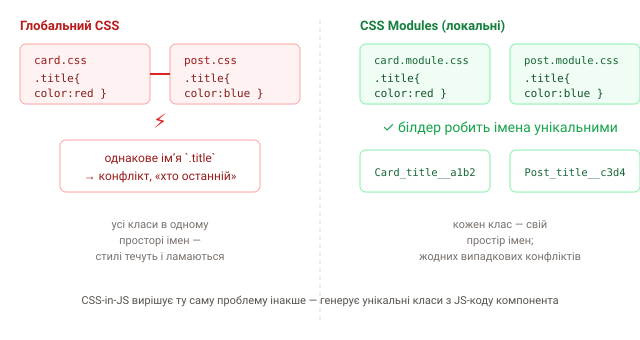

1. Проблема глобального CSS
Звичайний CSS має один глобальний простір імен: клас .title у
будь-якому файлі впливає на усі елементи з цим класом на сторінці. У малому
проєкті це ок, а у великому — джерело болю:
- випадкові конфлікти — два розробники назвали клас однаково, стилі «перетікають»;
- страх видаляти — незрозуміло, чи ще десь використовується цей клас;
- боротьба специфічності —
!important, довжелезні селектори; - складно зрозуміти, які стилі належать якому компоненту.

2. Ідея: локальний scope стилів
Розвʼязок — привʼязати стилі до компонента, а не до всієї сторінки. Тоді
клас .title у картці не зачепить .title у пості. Досягають цього
по-різному, але мета одна: стилі не течуть за межі свого компонента.
Це та сама проблема, що модулі розвʼязали для JS: замість глобальних змінних — локальні, імпортовані явно. Тут — те саме, але для класів CSS.
3. Огляд підходів
- Глобальний CSS + БЕМ — угода про іменування (
.card__title), щоб уникати збігів вручну. Працює, але дисципліна на людині; - CSS Modules — пишеш звичайний CSS у файлі
*.module.css, а білдер автоматично робить класи унікальними. Стилі й далі в окремих файлах; - CSS-in-JS — стилі описуєш прямо в JS/JSX (styled-components, Emotion); клас генерується з коду компонента;
- Utility-first (Tailwind) — узагалі без своїх класів, лише готові утиліти (окремий розділ курсу).
CSS Modules і CSS-in-JS розвʼязують одну проблему (локальний scope) з різних боків: перший лишає CSS у CSS-файлах, другий переносить його в компонент. Далі розберемо обидва й порівняємо.
4. Що коли доречно (коротко)
- маленький сайт / лендинг → звичайного CSS або Tailwind досить;
- компонентний застосунок (React/Vue) із власними стилями → CSS Modules — простий, швидкий, без рантайму;
- динамічні стилі за пропсами, теми, дизайн-система в JS → CSS-in-JS;
- Server Components / жорсткі вимоги до продуктивності → zero-runtime рішення (розберемо в окремому уроці).
Далі — по кроках: спершу CSS Modules, потім CSS-in-JS, і фінальне порівняння.